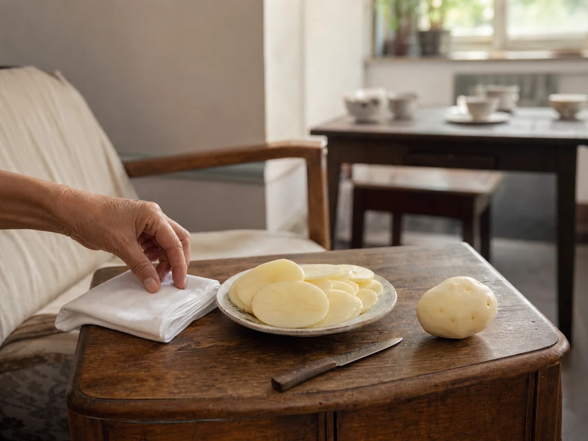

Potato Slices and the Folded Handkerchief
During a hot afternoon visit, an older neighbor cut a peeled potato into broad slices, laid one across a forehead, and folded a cotton handkerchief over it.

A pause beside the card table
I saw the potato brought out during a hot afternoon visit. The older neighbor at the card table pushed her chair back, went to the kitchen, and returned with a paring knife, a shallow plate, and one peeled potato.
She cut a broad center slice and laid it across the forehead of the woman resting on the sofa. A cotton handkerchief was folded over the slice so its wet edge would not slip toward the eyebrow.
The household cloth changed with the weather
The neighbor kept the remaining slices on the plate under an upturned bowl. When the first slice began to bend at the edge, she replaced it and wiped the forehead with the dry corner of the handkerchief.
Fresh mint had gone into a summer washbasin in the same room. On other evenings a warm towel was folded over closed eyes, while the coarse-salt bag stayed in the cupboard until winter. The cloth was familiar; what it carried changed.
Back to the kitchen
The last slice went into the kitchen-waste bowl. The neighbor rinsed the plate, washed the knife, and hung the handkerchief at the open window.
When the cards were dealt again, the upturned bowl was back on its shelf and the table held only cups.